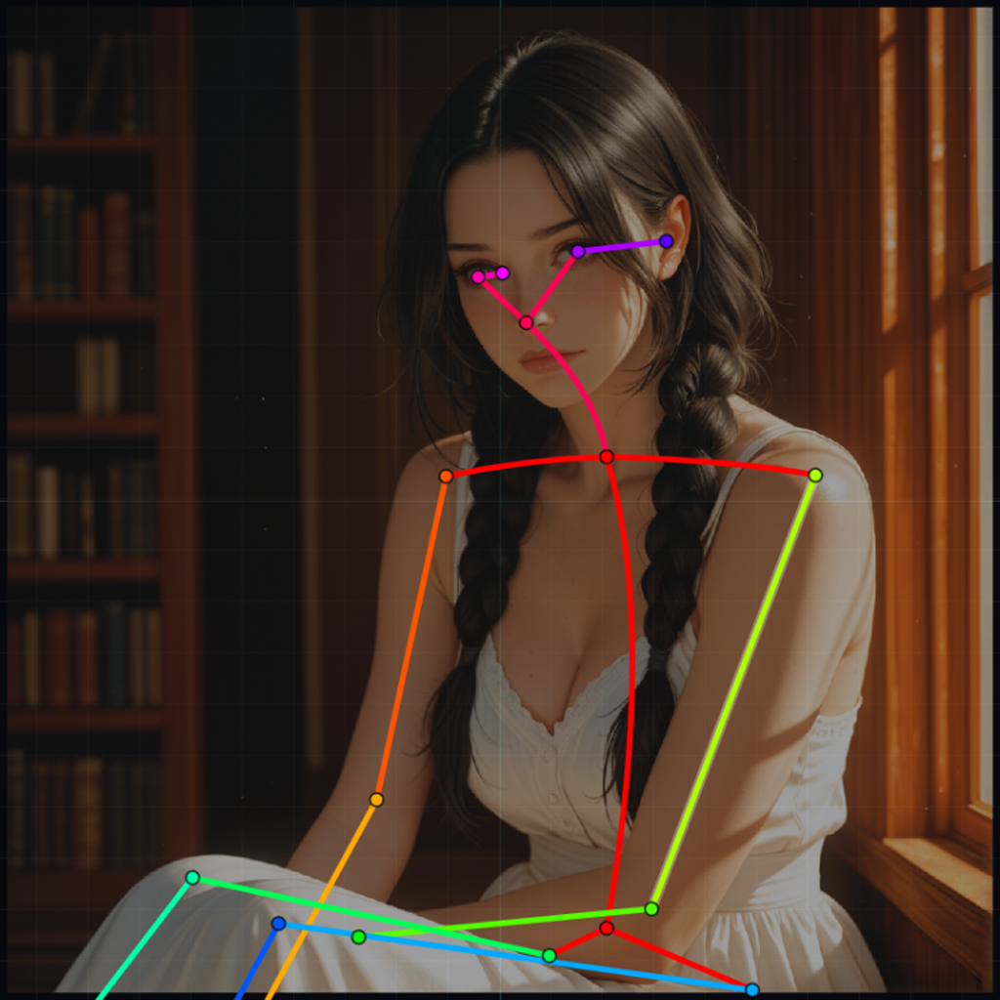
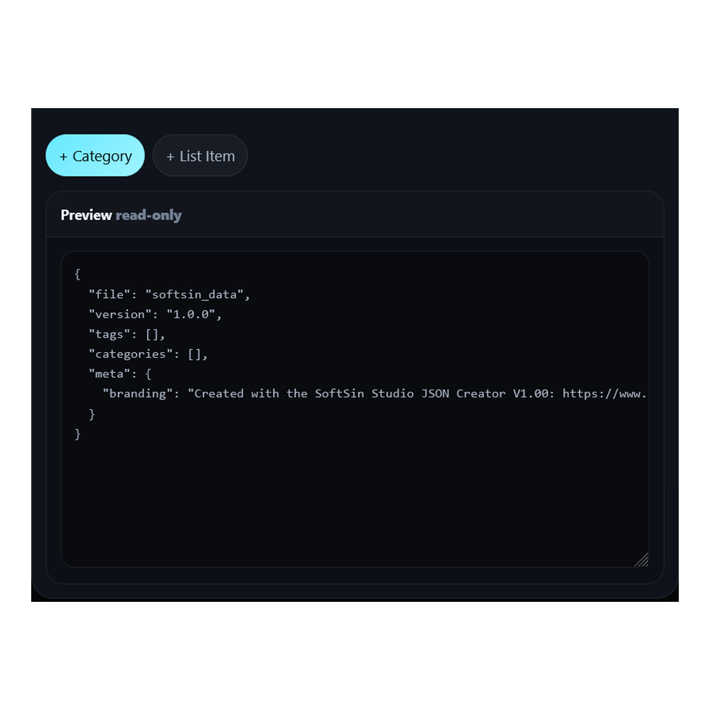
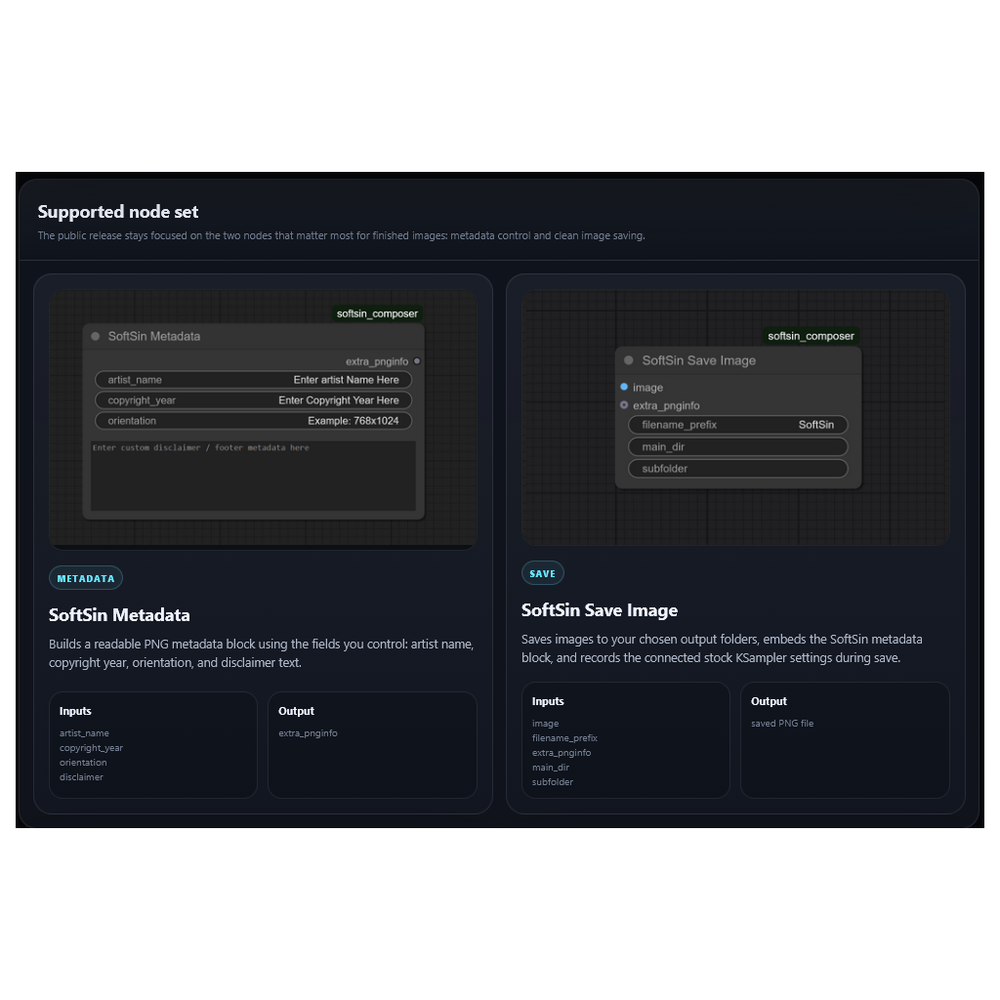
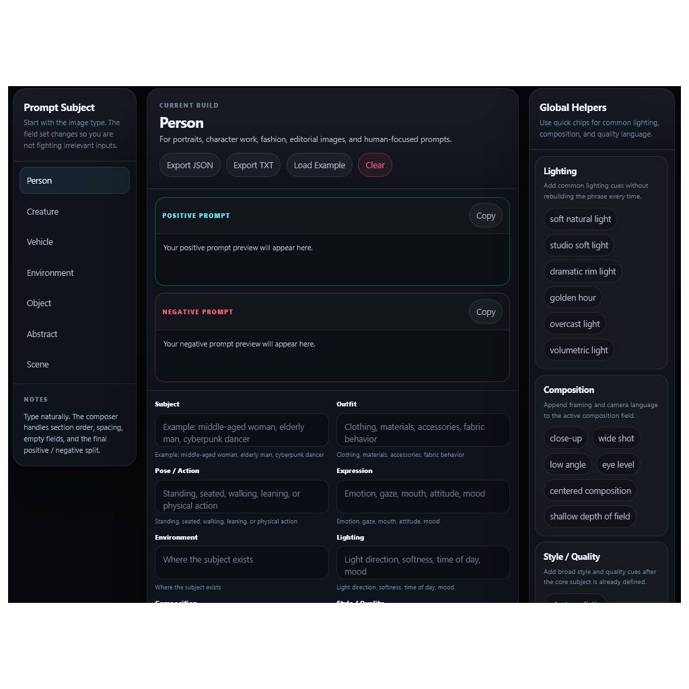

Pose Editor
Create BODY_25 control images from reference art, adjust bones directly on canvas, and export clean OpenPose-ready PNG files.

SoftSin Studios is a home base for browser-based creator tools, ComfyUI helpers, Stable Diffusion workflow experiments, artwork, updates, and documentation.
The SoftSin Studios ethos is simple: build useful tools that reduce friction instead of adding another layer of chaos to the creative stack.
Create BODY_25 control images from reference art, adjust bones directly on canvas, and export clean OpenPose-ready PNG files.

Build, clean, and reuse structured JSON for prompt vocabularies, tool data, presets, and workflow systems.

Documentation for the SoftSin Metadata and Save Image nodes, built around readable PNGInfo and cleaner image output.

Compose structured prompts with clear sections for identity, outfit, pose, environment, lighting, quality, and negatives.

Find SoftSin tools, release notes, support posts, workflow notes, and project updates from one place.
The tools are designed around real image-generation habits: reference images, pose control, prompt structure, reusable data, and clean exports that plug into an existing workflow.
Most SoftSin tools run directly in the browser. Open the page, use the tool, save or export the result, and get back to making the thing.
SoftSin favors simple files, clear labels, visible metadata, and formats that can be inspected later instead of buried in a black box.